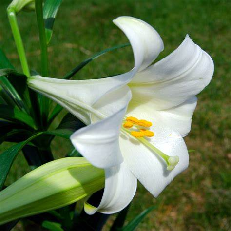

Lily
Lilies are elegant and fragrant flowering plants that are prized for their beautiful blooms and variety of colors and forms. Here's a comprehensive guide on lilies, including their characteristics, types, planting procedure, and care.
Types of Lily:
- Hybrid Tea Roses: Known for their large, elegant blooms and long stems, these roses are often used for cutting.
- Asiatic Lilies: These lilies are known for their vibrant colors and upward-facing flowers. They are among the earliest lilies to bloom in the summer.
- Oriental Lilies: Oriental lilies are prized for their large, fragrant flowers and exotic appearance. They tend to bloom later in the summer and often have downward-facing flowers.
- Trumpet Lilies: Trumpet lilies have large, trumpet-shaped flowers and are known for their strong fragrance. They typically bloom in mid- to late summer.
- Tiger Lilies: Tiger lilies feature distinctive spotted or striped petals and are well-suited to naturalizing in gardens. They bloom in midsummer.
- Easter Lilies: These lilies are popular as potted plants for Easter and have fragrant white flowers with trumpet-shaped blooms.
- Planting Procedure:
- Spring or Fall: The best times to plant lilies are in the spring after the last frost or in the fall at least six weeks before the first frost. This allows the bulbs to establish roots before winter.
- Sunlight: Lilies prefer full sun to partial shade, with at least 6 hours of direct sunlight per day.
- Soil: Choose well-draining soil with a slightly acidic to neutral pH (around 6.0 to 7.0). Sandy or loamy soils are ideal for lilies.
Weather in Kathmandu
Temperature: °C
Humidity: %
Condition:
Date & Time: